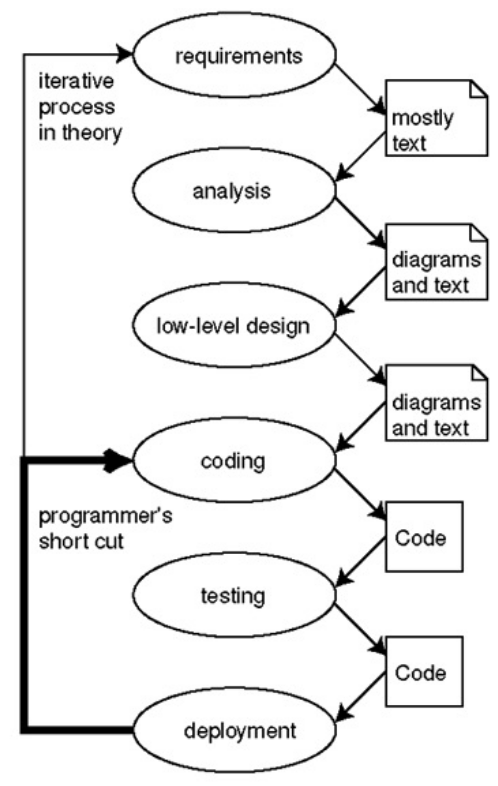
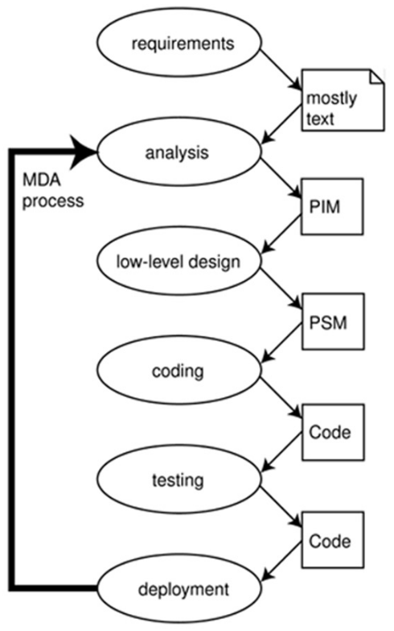
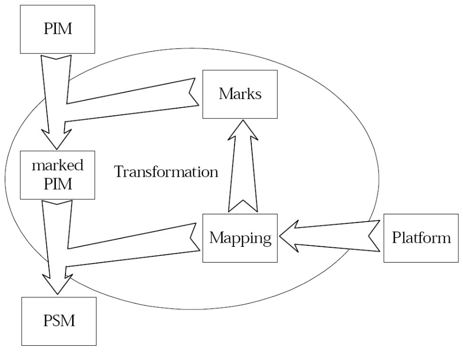
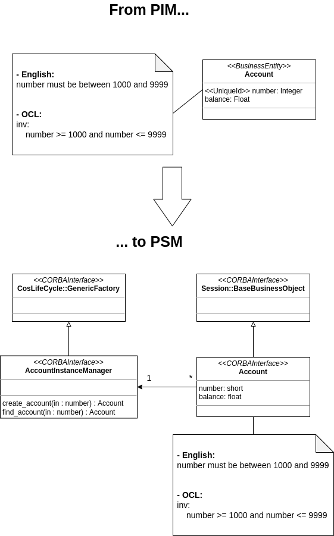
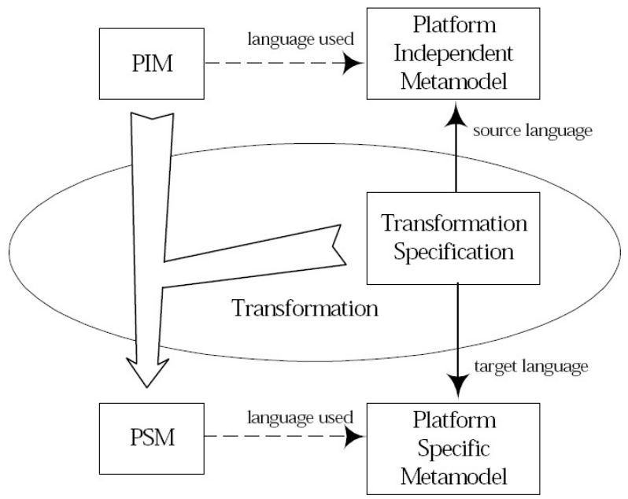

SOSE - Model Driven Architecture
Indice
1 Model Driven Architecture
1.1 MDA overview
L'Architettura Model-Driven (in breve MDA) parte dalla ben nota idea di separare le specifiche del funzionamento di un sistema dai dettagli del modo in cui il sistema utilizza le capacità della sua piattaforma.
MDA fornisce un approccio, e consente di fornire strumenti, per:
- specificare un sistema indipendentemente dalla piattaforma che lo supporterà.
- specificare le piattaforme sui quali verranno eseguiti i sistemi.
- scegliere una particolare piattaforma adatta a un particolare sistema.
- trasformare le specifiche di un sistema in altre specifiche adatte a una particolare piattaforma.
Perciò i tre principali obiettivi di MDA sono
- Portability: ovvero la capacità di un software di essere reimpiegato in differenti piattaforme.
- Interoperability: è la capacità di un sistema o di un software di cooperare e di scambiare informazioni o servizi con altri sistemi, in maniera affidabile e con ottimizzazione delle risorse. L'obiettivo dell'interoperabilità è dunque facilitare l'interazione fra sistemi differenti, nonché lo scambio e il riutilizzo delle informazioni anche fra sistemi informativi non omogenei.
- Reusability: è l'uso di risorse (assets) software già esistenti all'interno del processo di sviluppo dei un altro prodotto software.
il tutto attraverso la separazione tra sistema e piattaforma.
1.2 Problemi di integrazione
In un contesto reale, quando bisogna sviluppare un sistema portatile, che interagisca con sistemi diversi (ovvero interoperabile) e che possibilmente possa essere riutilizzato occorono le seguenti problematiche:
- non ci sarà consenso sulle piattaforme hardware sulle quali il sistema dovrà implementato.
- non ci sarà consenso sui sistemi operativi, ovvero sull' "ambiente" nel quale il sistema verrò eseguito.
- non ci sarà consenso sui protocolli di rete attraverso i quali comunicare.
- non ci sarà consenso sui linguaggi di programmazione utilizzati.
- non ci sarà consenso sui linguaggi di modellazione.
Questo sono tipiche problematiche che occorrono in contesti hardware/software/network eterogenei.
Perciò ci deve mecessariamente essere un consenso sul linguaggio del metamodello, ovvero sul meta-metamodello.
Spesso si cerca di aggirare queste problematiche optando per l'utilizzo di componenti middleware, ovvero del software intermedio che consente di connettere ed interfacciare due sistemi differenti. Il problema è che di questi standard ne esistono moltissimi, ognuno con le proprie caratteristiche più o meno adatte a un contesto. Inoltre col tempo molti standard scompaiono, ed altrettanti nuovi emergono. Perciò altre problematiche sorgono:
- qual è il "migliore" per il mio sistema?
- qual è la "migliore scelta successiva", ovvero lo standard che potenzialmente "esploderà" in futuro?
- come costruire software a lungo termine se non ho certezza sulla durata del middleware che scelgo?
- come affrontare il divario ricorrente tra i requisiti aziendali e gli artefatti middleware?
1.2.1 MDA solution
- PIM
- dei Platform Independent Models (in breve
PIM) ovvero dei modelli che non considerano le problematiche di interfacciamento con le differenti piattaforme, tralasciando i dettagli middleware. - PSM
- dei Platform Specific Models (in breve
PSM) ovvero dei modelli che invece si concetrano sulla definizione dei dettagli middleware utili per l'integrazione con le differenti piattaforme.
A questo punto definito un PIM si passa alla definizione di regole e tecniche di trasformazione che consentano di ricavare dal PIM i diversi PSM.
Questa tecnica consente di preservare un PIM nel momento in cui appaiono o si richiede l'utilizzo di nuovi middleware, consentendo così a un modello di essere interoperabile, poratitle e riutilizzabile in futuro.
Perciò il MDA sposta il focus dal middleware al modelware.
1.3 Models as development artifacts
Di solito, i ruoli di modellatore e programmatore sono completamente separati.
Infatti i modelli UML sono spesso definiti in maniera informale ed utilizzati dai programmatori come linee guida per lo sviluppo, non come qualcosa che contribuisce in maniera diretta alla produzione.
Inoltre il fatto che non siano definiti in maniera formale non li rende adatti ad un utilizzo-macchina, ovvero non avendo una semantica rigorosamente definita non sono machine-readable.
MDA invece utilizza modelli totalmente formali che possono essere elaborati automaticamente dalla macchina, perciò tali modelli sono considerati essere una parte diretta del processo di produzione.
Perciò in un tale ambiente, i ruoli di modellatore e programmatore non sono così distinti: l'attività di modellazione (formale_) è considerata un'attività di programmazione, mentre la modellazione informale rimane utile come veicolo di comunicazione (per ridurre le ambiguità nelle specifiche).
1.4 Concetti Base del MDA
I concetti base del MDA sono:
- Astrazione
descrizione di qualcosa che omette alcuni dettagli non rilevanti per lo scopo finale (il contrario di "perfezionamento").
- Perfezionamento
una descrizione più dettagliata conforme ad una specifica astrazione. Una coppia di modelli si dice essere in un rapporto di perfezionamento se uno (l'astrazione) è più astratto dell'altro (la realizzazione).
- Model Driven
MDAè un approccio allo sviluppo del sistema, che aumenta la potenza dei modelli in quel lavoro. Si dice basato su modelli (model driven) perché fornisce un mezzo per utilizzare i modelli che dirigono il corso di comprensione, progettazione, costruzione, distribuzione, funzionamento, manutenzione e modifica del software.- Piattaforma
- Una piattaforma è un insieme di tecnologie (ed evenutalmente altri sottosistemi) che forniscono un insieme coerente di funzionalità, attraverso interfacce e modelli di utilizzo specifici, che qualsiasi applicazione da essa supportata può utilizzare senza preoccuparsi dei dettagli di come vengono implementate le diverse funzionalità fornite dalla piattaforma.
- View
- Una rappresentazione dell'intero sistema vista dal punto di vista del relativo insieme di vincoli e obiettivi.
- Viewpoint
- Una specifica delle convenzioni per la costruzione e l'utilizzo di una view.
In termini semplici una view può essere visto come un metamodello di un viewpoint.
1.4.1 MDA viewpoints
- Computation Independent Viewpoint
- Il viewpoint indipendente dal calcolo (o Computation Independent Viewpoint) si concentra sull'ambiente_ e sui requisiti del sistema. I dettagli della struttura e dell' elaborazione del sistema sono nascosti.
- Platform Independent Viewpoint
- Il viewpoint indipendente dalla piattaforma (o Platform Independent Viewpoint) si concentra sul funzionamento di un sistema, nascondendo i dettagli necessari per una particolare piattaforma. In questo viewpoint vine mostrata quella parte della specifica che non cambia da una piattaforma all'altra. Tale viewpoint può utilizzare un generico linguaggio di modellazione, oppure anche un linguaggio specifico dell'area in cui verrà utilizzato il sistema.
- Platform Specific Viewpoint
- Il viewpoint specifico della piattaforma (o Platform Specific Viewpoint) combina il punto di vista indipendente dalla piattaforma con un "focus" aggiuntivo sul dettaglio della piattaforma specifica.
1.5 Models
Vediamo ora più nel dettaglio le diverse categorie di modelli utilizzati nel MDA.
1.5.1 Computational Independent Model (CIM)
Un CIM è una view di un sistema dal punto di vista indipendente dal calcolo (Computation Independent Viewpoint).
Tale modello non mostra i dettagli della struttura dei sistemi.
Un CIM è talvolta chiamato modello di dominio, in quanto nella sua specifica viene utilizzato un vocabolario familiare ai professionisti del dominio in questione.
I requisiti CIM dovrebbero essere poi riconducibili ai costrutti PIM e PSM che li implementano, e viceversa.
1.5.2 Platform Independent Model (PIM)
Un PIM è una view di un sistema dal punto di vista indipendente dalla piattaforma.
Tale modello mostra un determinato grado di indipendenza dalla piattaforma in modo tale da essere adatto all'uso su differenti piattaforme, purché simili e coerenti col sistema in questione.
1.5.3 Platform Specific Model (PSM)
Un PSM è una view di un sistema dal punto di vista specifico della piattaforma.
Tale modello combina le specifiche del relativo PIM con i dettagli che specificano come quel sistema utilizza un particolare tipo di piattaforma.
Un PSM fornisce un insieme di concetti tecnici che rappresentano i diversi tipi di parti che compongono una piattaforma, e i servizi che tale piattaforma offre.
Esempio:
Il CORBA Component Model (CCM) fornisce i concetti di EntityComponent, SessionComponent, ProcessComponent, Facet, Receptacle, EventSource e altri. Questi concetti vengono utilizzati per specificare l'utilizzo della piattaforma CORBA Component da parte di un'applicazione.
1.6 Ciclo di vita MDA
Come gia visto nel corso di Ingengeria del Software, dopo il rilascio di un software (in un classico ciclo di vita waterfall) sussegue una fase di mantenimento. Certe volte è necessario fare del mantenimento puramente tecnico del software, come per esempio con la scoperta di bug oppure semplicemente cattive performance. In questi casi si ritorna direttamente alla fase di sviluppo, testing e poi rilascio del software. Altre volte invece, dopo il rilascio di un software, ci sono problemi a livello di requisiti (per incomprensione oppure semplicemente perché il cliente non sapeva esattamente cosa voleva). In questi casi invece si ritorna indietro a monte del processo di sviluppo, avvolte è persino necessario dover ripartire dall'analisi dei requisiti.

Figura 1: Un classico modello di ciclo di vita.
In MDA invece il ciclo di vita è nettamente differnte, grazie proprio al fatto che il ruolo del modellista e del programmattore sono più unificati.
Innanzittutto dopo la fase di analisi viene generato un PIM, ovvero un modello formale e ben definito, la cui semantica è machine-readble, differentemente da un ciclo di vita classico in cui invece viene generato un modello informale (utile solo come linea guida).
Dopodiché si passa a una fase di design low-level in cui viene generato un PSM in base alla piattaforma desiderata.
Infine la fase di sviluppo, testing e rilascio sono supporate da strumenti che presi i modelli formali PSM generano in maniera automatica dei artefatti software.
Data appunto questa automatizzazione e questo forte legame coi modelli PIM e PSM, qualsiasi problematica che occorre in fase di mantenimento (che sia tecnica o di specifiche) necessita un intervento in fase di analisi, ovvero nel processo di definizione del PIM.

Figura 2: Ciclo di vita sviluppo MDA.
1.7 Mappings
Una mappatura MDA (o mapping) fornisce le specifiche per la trasformazione di un modello PIM in uno specifico PSM.
Il modello della piattaforma target determinerà la natura del mapping.
Un marchio rappresenta un concetto nel PSM e viene applicato a un elemento del PIM, per indicare come tale elemento deve essere trasformato.
Esempio:
"Entity" è un marchio che può essere applicato a classi o oggetti in unPIM. Il marchio "Entity" indica che un oggetto contrassegnato come Entity nelPIMcorrisponde, in unPSMdi tipo CORBA Component, a due oggetti, di tipoHomeInterfaceedEntityComponent.

Figura 3: Model Transformation (marking approach)


Figura 5: Metamodel Mapping.